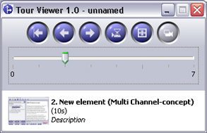

Guided Tours
A Guided Tour is a sequence of elements which lead the studying with regard to certain questions through a Learning Unit. It helps to find an approach or to reject a way to the solution. The Tour Creator can be invoked over the menu entry "Learning Unit / Tour Creator". An additional program window appears in which Guided Tours can be selected.
Before you start a tour, you choose an entry from the options display in the Tour Creator Window. After that the elements which are part of the selected tour appear in the lower area.
For starting the tour you click on the blue button in the toolbar. The Tour Creator Window changes to the presentation mode. In the presentation mode the window is smaller and does not disturb looking at the elements of a tour which are shown in the Freestyle Learning pro-gram window.

With the slider you can carry out a fast choice of elements of the tour in the presentation mode. You see a preview of the element as well as the corresponding description data in the lower window area. If you let the slider off, the selected element is shown in Freestyle Learn-ing. It still saves more place if the preview window is also removed. Therefore press the cor-responding button in the toolbar.
The course of a tour can be time controlled or manually carried out. You start a time con-trolled presentation by click on the "Play" button. Every element is shown as long as it is provided in the element properties. You can stop and continue the presentation again any time by pushing the "Play" button once more. The next tour element is shown at a manual expiry by pressing the arrow button. The choice over the arrow buttons works also at a time con-trolled run.
Buttons for presentation mode
|
Back to the beginning |
Stops the current presentation and sets the slider at the beginning |
|
Previous / next element |
Shows the previous or next element |
|
Start tour |
Starts the presentation of a time controlled tour |

|
Resume tour |
Resumes the presentation of a currently stopped tour. |

|
Element preview |
Hides / activates the element preview |
Hint: You can edit a Guided Tours anytime.
Back to Main Help Page